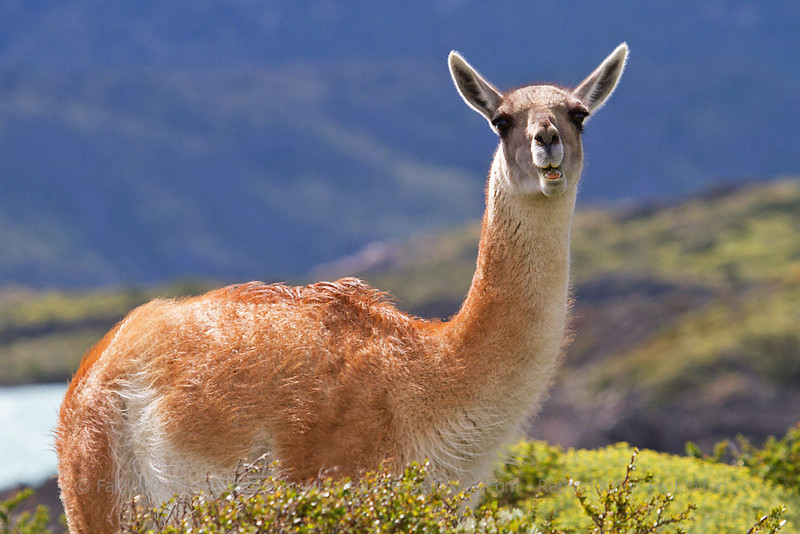
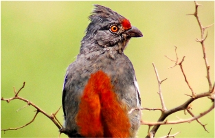
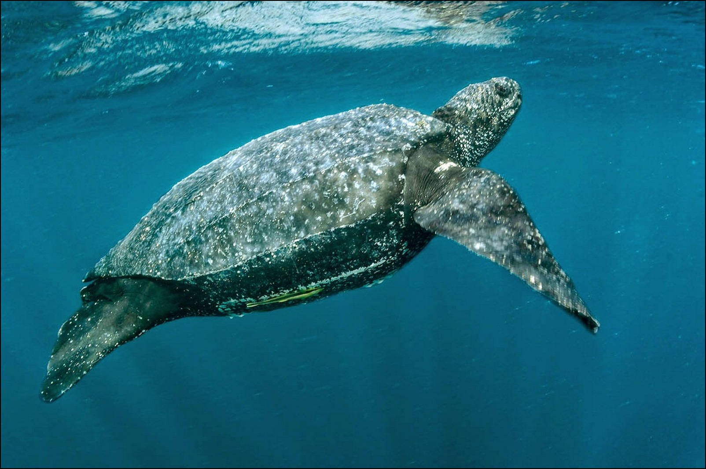
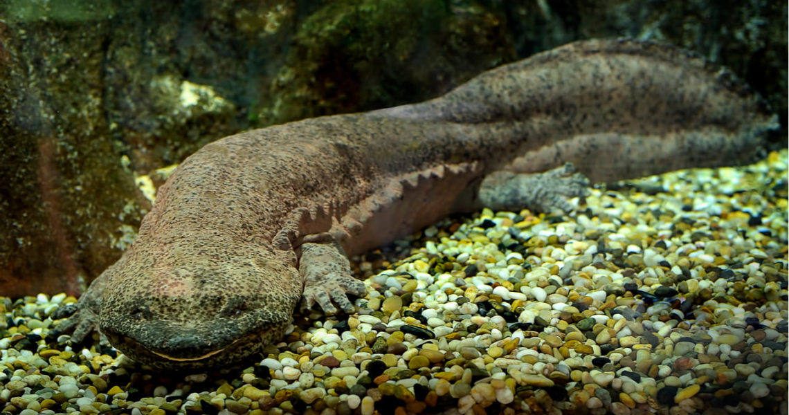

Debido a la actividad humana, cada día se extinguen 150 especies animales en el mundo. ... Algunas especies que se han extinguido en gran parte a causa de las actividades humanas, principalmente destrucción del hábitat y exceso de caza. En Chile, el sándalo (Santalum fernandezianum) es un ejemplo de extinción biológica.
El guanaco es el camélido silvestre más grande de Sudamérica. Y solo en Perú existe la subespecie Lama guanicoe cacsilensis, que se distribuye desde La Libertad en el norte, hasta Puno y Tacna en el sur,Está en peligro crítico de extinción, pues se calcula que solo hay 3000 ejemplares. Se teme que, de continuar su cacería furtiva, esta especie desaparecería en 30 años
Comúnmente es conocido como pájaro cortarramas peruano o cortaplantas peruano y científicamente como Phytotoma raimondii.
Es una especie endémica de la costa norte y central peruana, pero actualmente sus poblaciones están muy fragmentadas, por lo que su reproducción es más difícil. Por ello y por otras causas, el cortarramas peruano se encuentra prácticamente en peligro de extinción, ya que su estado es muy vulnerable y su población sigue bajando
Tortuga laúd o cardón (Dermochelys coriacea): es la tortuga más grande del mundo, habita aguas tropicales y templadas, se encuentra dentro de la categoría “vulnerable” según la lista roja del IUCN del año 2013. Las principales amenazas que presenta la tortuga cardón son la pesca, tanto incidental como intencional, la contaminación acuática y el cambio climático. Los humanos las utilizan para consumo de su carne o de sus huevos, y para la elaboración de algunos productos comerciales.
La salamandra gigante china en peligro de extinción, es una de las especies animales amenazadas, oriundas del continente asiático, cuya esperanza de vida puede superar los cincuenta años, habiéndose llegado a descubrir recientemente algunas especies que superan, incluso, los 200 años de edad.
Esta especie de anfibio, única en el mundo, posee un futuro incierto debido a las amenazas constantes que enfrenta día a día. Este post te lleva a conocer la salamandra más grande del mundo y las características que la definen; continua leyendo y conoce por qué la salamandra gigante china está en peligro de extinción
